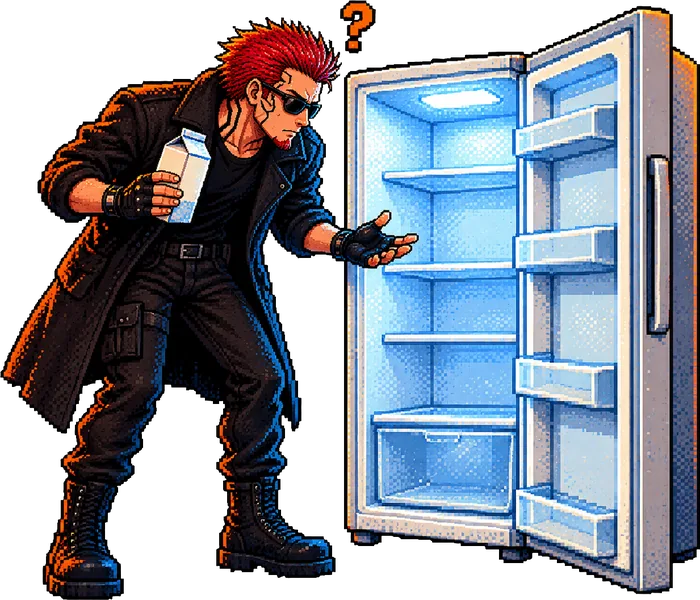
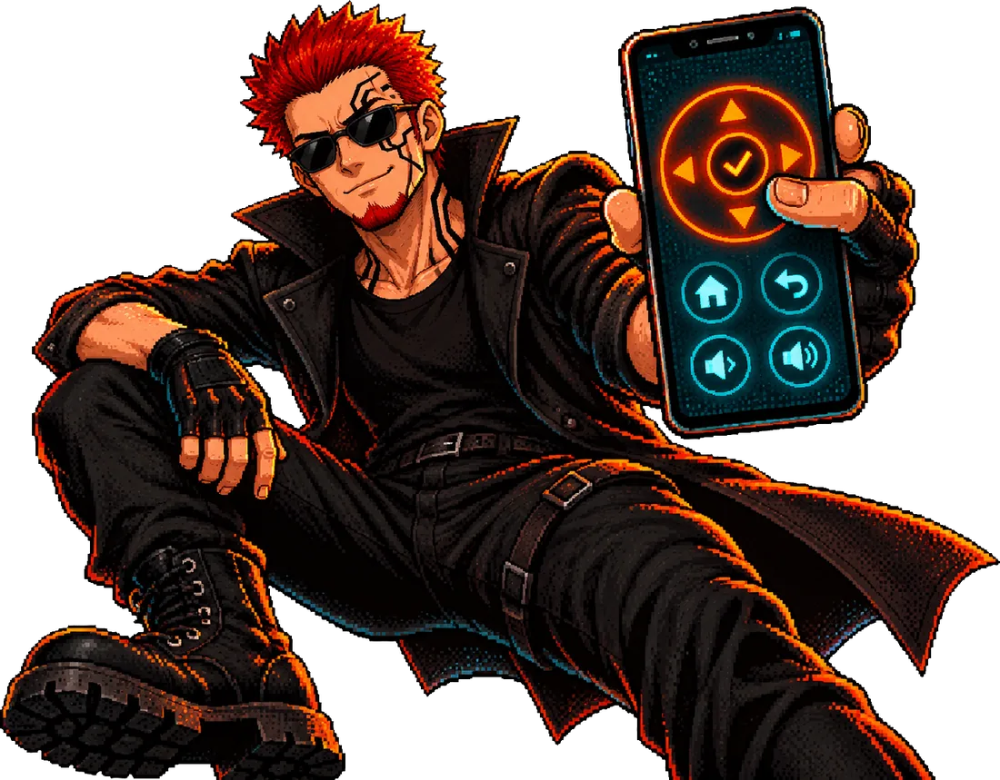

grep -i broke
The first version did nothing
It looked right, every tap exited cleanly, and the TV ignored all of them. These are the fixes, already in the script and widget you install. They are here for the day you change it.

Widgets for omalauncher · one folder per tool
omalauncher-tools holds widgets and helper scripts for omalauncher, an Android launcher with an optional Arch Linux inside it. Each tool lives in its own folder with its guide and the story of how it was made. The first one turns a phone into a remote for a Sony Android TV.
Clone https://github.com/CloudStrife7/omalauncher-tools, then follow tv-remote/INSTALL-tv.md to install the TV remote widget. My TV's IP is YOUR_TV_IP. Do not pair. I will do that myself.
The whole install, typed once into Claude Code in omalauncher's terminal. Pairing is the one step you do by hand.

ls tools/
The phone's live copy of every widget is kept in a separate config repo. These folders are each tool kept on its own, with the guide to follow and the sessions that built it.
A remote widget for a Sony BRAVIA Android TV. It sends remote keys over Wi-Fi to the TV's Android TV remote port, so a phone on the same network can drive the TV with no app installed on the TV.
Tested on one TV: a Sony BRAVIA X900F (model BRAVIA 4K GB ATV3).
.owl file, declares owl: 12, 6×9 tiles, shrinks to 4×5.pair, key, app, status.cat tv-remote/GUIDE.md
You need: an Android TV, an Android phone with omalauncher and Claude Code, and one shared Wi-Fi. You get: a tv.owl widget, a tv-remote command, and a pairing with your TV that lasts.
Skip this if you have a working remote, the Google TV app finds your TV, or a USB keyboard works in the TV's USB port. Try those first.
Home, then Settings > Device Preferences > About. Press OK on Build 7 times. Back, open Developer options, turn on USB debugging. It is the one step you cannot do afterwards without a remote.
Without a remote you cannot read it off the TV. Have Claude Code on a computer scan your network: the TV is the device with port 6466 open, the Android TV remote port. Give it a fixed IP in your router.
In omalauncher's terminal, start Claude Code and give it the one sentence at the top of this page. It installs Python and the remote library, saves the TV's IP, and copies the widget into omalauncher's widgets folder.
The TV shows a 6-character code. Type it straight away, because it expires. Claude cannot see the TV, so this step is yours. If the TV hangs on an old pairing box, unplug it, plug it back in, and pair again.
The widget's header shows the TV's state and volume. If the number climbs, the key reached the TV. A tap takes about two seconds, because each one opens a fresh connection.
Test with the volume number, not the exit code.
Keep ~/.config/tv-remote/key.pem private: it is the key to your TV. The full guide, with every detail, is GUIDE.md, or the illustrated PDF.
grep -i broke
It looked right, every tap exited cleanly, and the TV ignored all of them. These are the fixes, already in the script and widget you install. They are here for the day you change it.

tv-remote status prints the model.tv-remote status